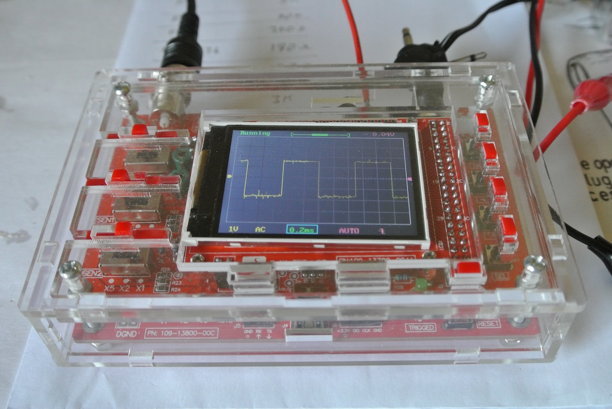

When 'playing' with microcontrollers, servos and other electronics I often thought it would be usefulto have an oscilloscope. However, I couldn't really justify either the cost or the space that such a tool would take. So at the end of August in 2016 I bought a DSO 138 Oscilloscope DIY kit from GearBest for £14.31, including an acrylic case and delivery, as an early Christmas present. The JYE Tech device only has a 2.4" screen, but for low accuracy and low frequency signals it should be fine.
The kit comes with a PCB with surface mount components, including the microcontroller, already soldered in place. Similalrly, the TFT screen is already attached to the screen PCB. There is then a bag of bits. Basically all the through-hole components.
The first photo shows the board after I had soldered all the components to the board. The instructions basically led you through, by component type. So all the resistors were soldered in place first, then the diodes, etc.
The second photo shows the device powered up (using a 9V battery) and showing the in-built test signal.
The final photo shows the same signal, but with the oscilloscope in its acrylic box. I had to file the bolt holes and glue a broken pice of acrylic to which the screen is bolted. So the simple process of slotting together the pieces and bolting them together took most of an afternoon.
© David James 2017 Last updated: 21st June 2017